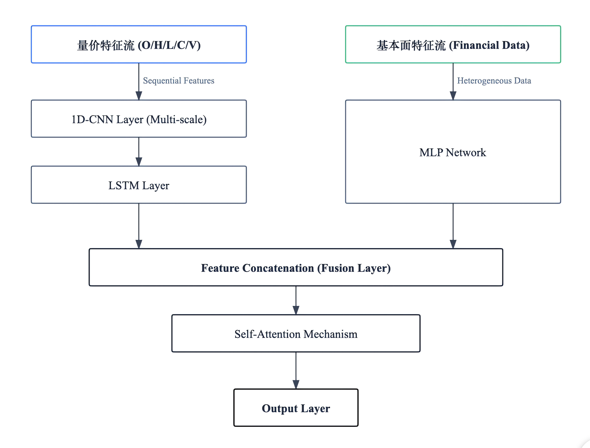
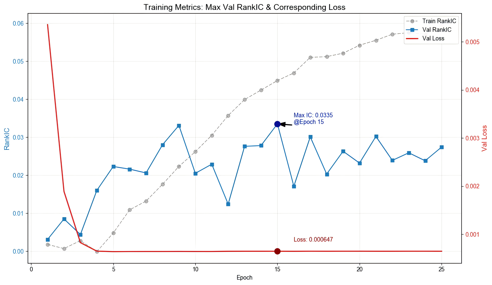
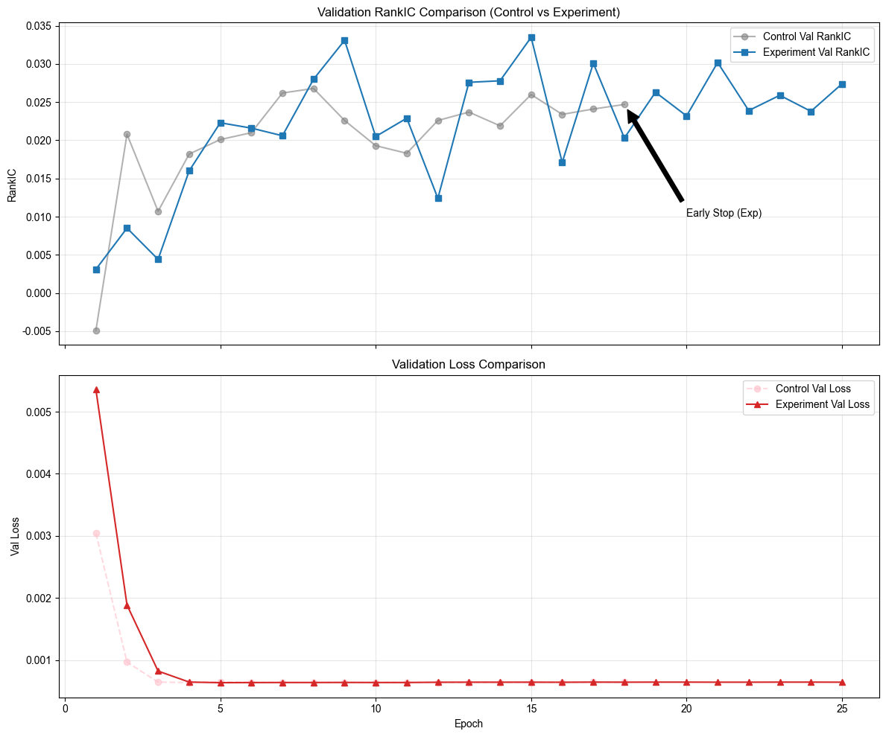
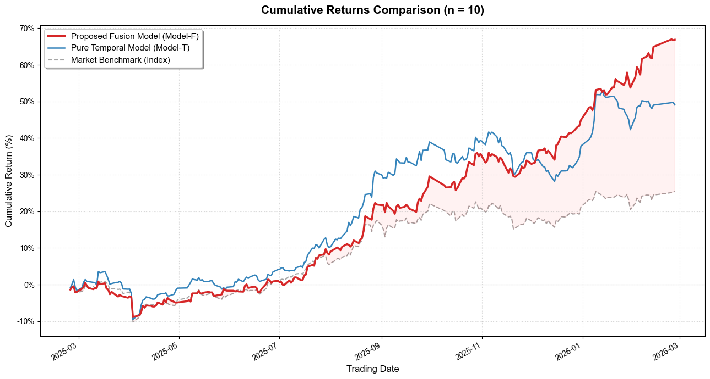
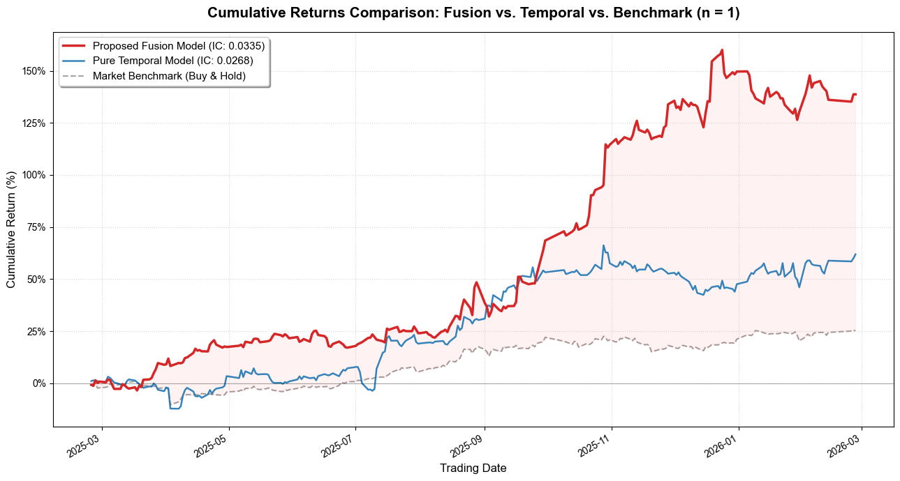
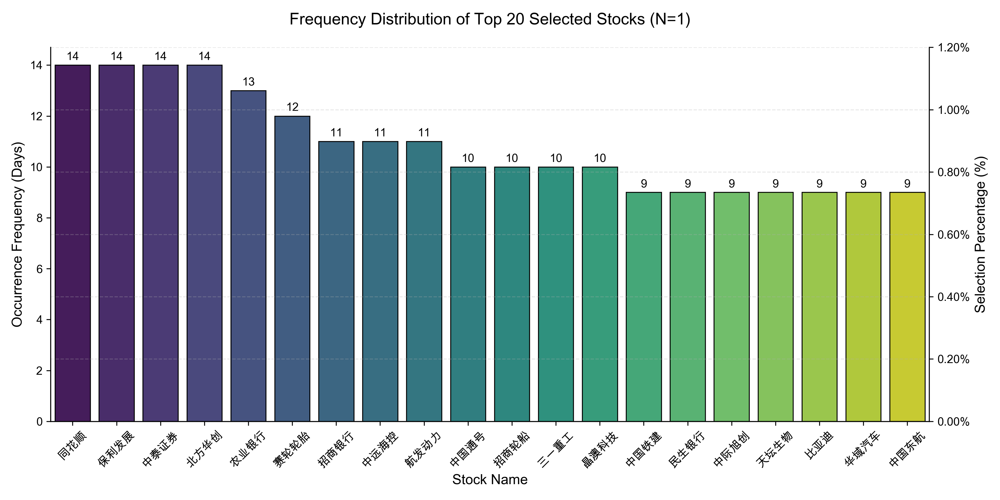
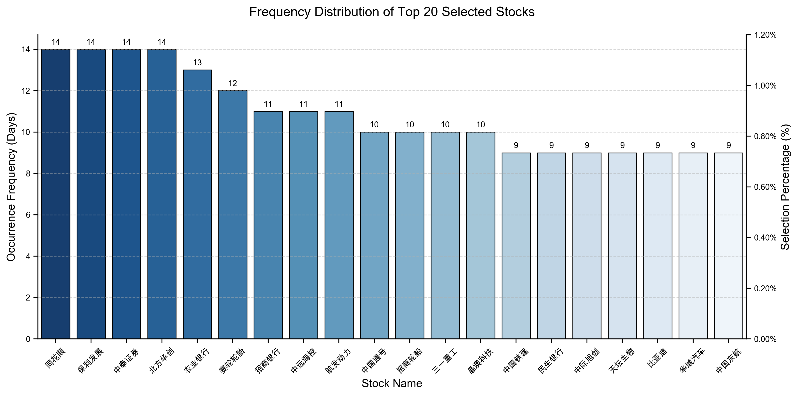

Mixed-Frequency Deep Learning for Cross-Sectional Stock Prediction混频深度学习与横截面股票预测
Do financial statements still add alpha beyond price and volume? An empirical study on CSI 300 constituents.财务信息是否仍能在量价数据之外贡献增量 alpha？基于沪深 300 成分股的实证研究。
- Built a mixed-frequency deep learning pipeline combining quarterly financial statement data (MLP branch) with daily price/volume data (CNN-LSTM branch), fused by a self-attention layer.
- Trained with a pairwise ranking loss so the model optimizes the cross-sectional ranking of stocks — the objective that actually matters for selection — instead of pointwise return regression.
- Adding financial features improved cross-sectional Mean IC by ~26% (0.0073 → 0.0092) and RankIC by ~33% (0.0050 → 0.0067); ICIR rose from 0.11 to 0.16.
- Portfolio backtests: +69.3% annualized (Sharpe 3.28) for the N = 10 portfolio and +144.7% (Sharpe 2.98) for the extreme N = 1 setting, versus +26.2% (Sharpe 1.62) for the equal-weighted CSI 300 — simulation under simplified assumptions.
- 构建了混频深度学习流程：将季度财务数据（MLP 分支）与日频量价数据（CNN-LSTM 分支）通过自注意力层融合。
- 采用成对排序损失训练，直接优化股票的横截面排序——这才是选股真正需要的目标，而非逐点收益率回归。
- 引入财务特征后，横截面 Mean IC 提升约 26%（0.0073 → 0.0092），RankIC 提升约 33%（0.0050 → 0.0067），ICIR 从 0.11 升至 0.16。
- 组合回测：N = 10 年化 +69.3%（夏普 3.28），极端 N = 1 配置年化 +144.7%（夏普 2.98），等权沪深 300 基准为 +26.2%（夏普 1.62）——基于简化假设的模拟结果。
1. Motivation1. 研究动机
Most daily-frequency stock-selection models are trained only on price/volume data. Accounting fundamentals move slowly — they are updated quarterly — but they remain the primary channel through which firm value is communicated to the market.
多数日频选股模型仅使用量价数据训练。会计基本面变化缓慢——按季度更新——但仍然是市场理解公司价值的主要渠道。
This study asks a narrow, practical question: when market and fundamental data have different sampling frequencies, does a deep model with an explicit fusion mechanism extract incremental predictive power from financial statements?
本研究提出一个具体的问题：当市场数据与基本面数据具有不同采样频率时，带有显式融合机制的深度模型能否从财务报表中提取增量预测能力？
| Design choice | Why |
|---|---|
| Separate MLP branch for quarterly financials | Fundamentals are tabular, low-frequency and smooth — a different inductive bias from price series |
| CNN-LSTM branch for daily OHLCV | CNN captures local price-volume structure; LSTM captures longer temporal dependence |
| Self-attention at the fusion layer | Lets the model dynamically re-weight fundamental vs. technical signals as the regime changes |
| Pairwise ranking loss | Portfolio construction only needs the order of predicted returns, not their level |
| 设计选择 | 原因 |
|---|---|
| 季度财务走独立 MLP 分支 | 基本面是表格型、低频、平滑的数据，与价格序列的归纳偏置不同 |
| 日频 OHLCV 走 CNN-LSTM 分支 | CNN 捕捉局部量价结构，LSTM 捕捉更长的时间依赖 |
| 融合层使用自注意力 | 让模型随市场状态动态调整基本面与技术面信号的权重 |
| 成对排序损失 | 组合构建只需要预测收益的排序，而非绝对水平 |
2. Data2. 数据
| Block | Frequency | Content | Source |
|---|---|---|---|
| Price / volume | Daily | OHLCV and derived technical inputs for CSI 300 constituents | Wind terminal |
| Financial statements | Quarterly (aligned to daily) | Balance-sheet, income-statement and cash-flow items, standardized | Wind terminal |
| 数据块 | 频率 | 内容 | 来源 |
|---|---|---|---|
| 价格 / 成交量 | 日频 | 沪深 300 成分股 OHLCV 及衍生技术指标 | Wind 终端 |
| 财务报表 | 季度（对齐至日频） | 资产负债表、利润表、现金流量表科目，已标准化 | Wind 终端 |
Sample: CSI 300 constituents, 2016 – 2026, 627,075 stock-day rows. Financial features are aligned to the trading calendar from each item's disclosure date, so the model can only use information available at prediction time.
样本：沪深 300 成分股，2016 – 2026，共 627,075 条股票-日观测。财务特征按披露日期对齐至交易日历， 确保模型仅使用预测时点可得的信息。
3. Methodology3. 方法
Two asymmetric encoders are combined by a single-head self-attention block that learns per-sample fusion weights, followed by a linear ranking head. The pairwise ranking objective penalizes the model whenever a lower-ranked stock is predicted above a higher-ranked one, which reduced the tendency of plain regression to chase the magnitude of noisy daily returns.
两个非对称编码器由单头自注意力块融合，学习每个样本的融合权重，后接线性排序头。 成对排序目标在市场把低排序股票预测得高于高排序股票时施加惩罚，抑制了普通回归追逐噪声日收益量级的问题。
Two runs are trained with identical pipelines as an ablation: Model-T (price/volume branch only) and Model-F (full fused model). Fusion-layer attention weights are inspected per period to check whether the model shifts between fundamental and technical logic over time.
以完全相同的流程训练两个模型作为消融：Model-T（仅量价分支）与 Model-F（完整融合模型）。 我们会按时期检查融合层注意力权重，观察模型是否在市场环境变化时在基本面与技术面逻辑之间切换。

4. Results4. 结果
Convergence (statistical performance)模型收敛性对比（统计表现）
| Model | MSE | RMSE | MAE | R² |
|---|---|---|---|---|
| Model-T (price only) | 0.000525 | 0.022919 | 0.014889 | −0.008389 |
| Model-F (fused) | 0.000530 | 0.023011 | 0.014923 | −0.016490 |
| 模型 | MSE | RMSE | MAE | R² |
|---|---|---|---|---|
| Model-T（仅量价） | 0.000525 | 0.022919 | 0.014889 | −0.008389 |
| Model-F（融合） | 0.000530 | 0.023011 | 0.014923 | −0.016490 |
Both models sit at very similar error levels, and the slightly negative R² is expected for noisy return prediction — it reflects the low signal-to-noise ratio of daily returns rather than a failure of the architecture.
两组模型的绝对误差水平非常接近；R² 略微为负符合日频收益率信噪比极低的特征， 并不代表模型失效。
Information metrics模型预测精度对比（信息指标）
| Model | Mean IC | Mean RankIC | ICIR | RankICIR | IC Win-Rate |
|---|---|---|---|---|---|
| Model-T (price only) | 0.007333 | 0.005036 | 0.110333 | 0.075038 | 0.546939 |
| Model-F (fused) | 0.009227 | 0.006686 | 0.163558 | 0.113994 | 0.551020 |
| 模型 | Mean IC | Mean RankIC | ICIR | RankICIR | IC Win-Rate |
|---|---|---|---|---|---|
| Model-T（仅量价） | 0.007333 | 0.005036 | 0.110333 | 0.075038 | 0.546939 |
| Model-F（融合） | 0.009227 | 0.006686 | 0.163558 | 0.113994 | 0.551020 |
Model-F's Mean IC reaches 0.009227 and Mean RankIC 0.006686 — improvements of ~25.8% and ~32.8% over Model-T. ICIR and RankICIR rise to 0.163558 and 0.113994, with an IC win-rate of 55.10%. On the peak validation RankIC, the fused model reached 0.0335 versus 0.0268 for the baseline (+25%), consistent with the ablation findings.
Model-F 的 Mean IC 达到 0.009227、Mean RankIC 达到 0.006686，较 Model-T 分别提升约 25.8% 与 32.8%；ICIR 与 RankICIR 提升至 0.163558 和 0.113994，IC 胜率 55.10%。 验证集 RankIC 峰值方面，融合模型达到 0.0335，基线为 0.0268（+25%）， 与消融实验结论一致。


5. Backtest5. 回测
Each day the model ranks all CSI 300 constituents by predicted score and holds the top N names, compounding daily returns. Two portfolio sizes were tested.
策略每日按预测得分对沪深 300 成分股排序，持有排名前 N 只股票，并逐日累乘收益。以下测试两种组合数量。
N = 10 portfolioN = 10 组合
| Strategy | Annualized return | Sharpe | Max drawdown | Alpha |
|---|---|---|---|---|
| Model-F (fused) | 69.3% | 3.28 | −11.1% | +43.1% |
| Model-T (price only) | 50.8% | 2.31 | −12.6% | +24.5% |
| CSI 300 (equal-weight benchmark) | 26.2% | 1.62 | −11.1% | — |
| 策略 | 年化收益 | 夏普 | 最大回撤 | Alpha |
|---|---|---|---|---|
| Model-F（融合） | 69.3% | 3.28 | −11.1% | +43.1% |
| Model-T（仅量价） | 50.8% | 2.31 | −12.6% | +24.5% |
| 沪深 300（等权基准） | 26.2% | 1.62 | −11.1% | — |

The fused strategy shows a clearly higher Sharpe ratio (3.28 vs 2.31) and a lower max drawdown than the price-only model — evidence that fundamental information improves the robustness of the selection signal.
融合策略的夏普比率显著更高（3.28 vs 2.31）、最大回撤更低，证明基本面信息提升了选股信号的稳健性。
N = 1 (extreme concentration)N = 1（极端集中）
| Strategy | Annualized return | Sharpe | Max drawdown | Alpha |
|---|---|---|---|---|
| Model-F (fused) | 144.7% | 2.98 | −12.9% | +118.5% |
| Model-T (price only) | 64.2% | 1.72 | −14.9% | +37.9% |
| CSI 300 (equal-weight benchmark) | 26.2% | 1.62 | −11.1% | — |
| 策略 | 年化收益 | 夏普 | 最大回撤 | Alpha |
|---|---|---|---|---|
| Model-F（融合） | 144.7% | 2.98 | −12.9% | +118.5% |
| Model-T（仅量价） | 64.2% | 1.72 | −14.9% | +37.9% |
| 沪深 300（等权基准） | 26.2% | 1.62 | −11.1% | — |

At the extreme N = 1 setting the return increases substantially: Model-F reaches 144.7% annualized (theoretical, excluding fees and slippage), well above Model-T's 64.2% and the benchmark's 26.2%, with a Sharpe of 2.98 and a max drawdown of −12.9% — better than Model-T's −14.9% and close to the benchmark's −11.1%.
N = 1 的极端配置下收益率大幅提升：Model-F 年化收益达到 144.7%（理论值，不含手续费与滑点）， 显著高于 Model-T 的 64.2% 与基准的 26.2%；夏普比率 2.98，最大回撤 −12.9%， 优于 Model-T 的 −14.9%，接近基准的 −11.1%。
Top 20 most-held stocks持仓天数最高的前 20 只股票
No single name dominates: the most frequently held stocks each account for only ~1.14% of holding days, and the list spans financials, advanced manufacturing, logistics and new-energy names — the excess return comes from a broad selection logic rather than a few lucky stocks.
榜单中没有任何单一标的占据主导：出现频次最高的个股持仓天数占比仅约 1.14%， 覆盖大金融、高端制造、周期物流与新能源等多个板块——超额收益来自普适的选股逻辑，而非个别标的。


6. Backtest caveats6. 回测局限
These are simulation results, not live performance. Known limitations:
以上为模拟结果，并非实盘表现。已知局限：
- No full market-impact or capacity modelling; concentrated top-N portfolios are not deployable at scale without significant slippage.
- Single market (CSI 300) and a single historical window; the prediction period covers a specific macro regime.
- Transaction costs, borrow constraints and limit-up/limit-down frictions are simplified.
- Standard overfitting risk for any pipeline selected partly on validation metrics.
- 未完整建模市场冲击与容量；集中持仓的 top-N 组合在规模上无法在不产生显著滑点的情况下部署。
- 单一市场（沪深 300）与单一历史区间；预测期覆盖特定的宏观环境。
- 交易成本、融券约束与涨跌停摩擦均做了简化。
- 任何部分依据验证指标选择的流程都存在过拟合风险。
The honest reading: the backtest is directional evidence that financial features improve the ranking signal — not a claim of 145% annual returns.
诚实的读法是：回测是方向性证据——财务特征提升了排序信号——而不是年化 145% 的收益承诺。
7. Limitations & next steps7. 局限与后续方向
- Industry / size neutralization and incremental IC after neutralization.
- Walk-forward retraining instead of a single split.
- Realistic costs and capacity; evaluate a top-N portfolio rather than top-1.
- Extend the fusion layer to more data frequencies (weekly analyst data, monthly macro).
- 行业 / 市值中性化，以及中性化后的增量 IC。
- 以滚动窗口（walk-forward）重训取代单次划分。
- 真实的成本与容量建模；评估 top-N 组合而非 top-1。
- 将融合层扩展到更多数据频率（周频分析师数据、月频宏观数据）。
© 2026 Venti · Research portfolio研究作品集